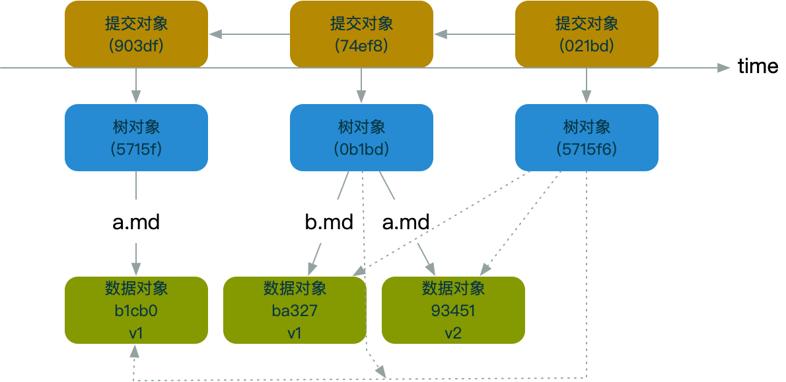

提交对象-记录了操作过程
echo '创建一个提交对象，我的操作过程' | git commit-tree 839800f9dd74a17ff9a7a9b3575ce107d0f8885c
git log
commit 6449c992db897cf48665f3e1cd5419e314427bf3 (HEAD -> master)
Author: baihui <baihuiit@163.com>
Date: Wed Jan 30 08:25:05 2019 +0800
创建一个提交对象，我的操作过程
(END)
839800f9dd74a17ff9a7a9b3575ce107d0f8885c 是一个树对象
提交对象-引用父提交对象形成提交记录
git write-tree
5715f69a6ce235e53fafe92e417e539e36271335
echo '新添加b.md 内容是987' | git commit-tree 57156 -p 0b1bd
commit-tree 当前树key -p 指向指定的提交对象（父提交对象）
通过引用父提交对象构成整个提交记如图:
